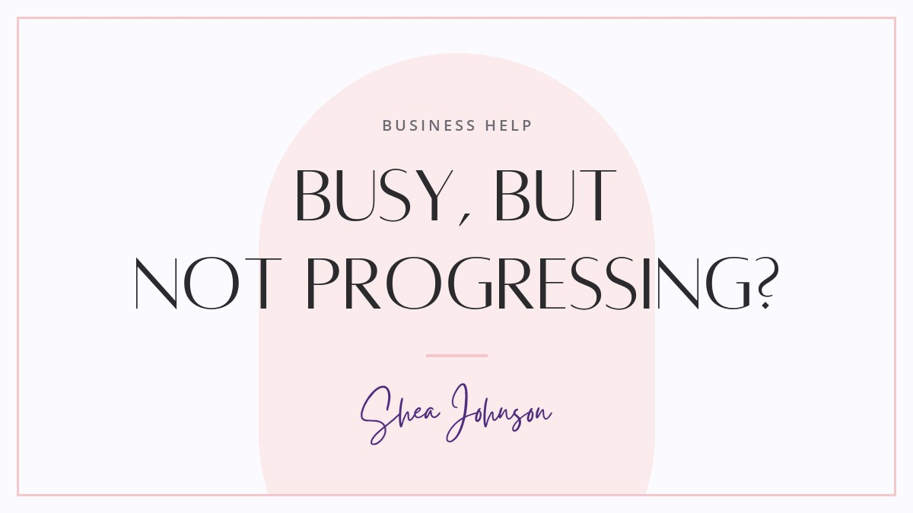

I have this example that I like to use when I describe to people what my life used to look like vs. what I really wanted it to look like.
And that example goes a little bit like this…
I got tired of being busy in a way where I was only moving sideways.
I wasn’t making any progress.
I wasn’t moving up.
I wasn’t moving toward my goal.
I was just very busy.
I would do this over here.
And then if I felt like doing something different, I would just go do this over there.
I translated that as being productive because I was busy.
I was confusing being productive with actually growing.
And so I began to do some research…
Instead of moving sideways, how do I go up?
And that’s when I revisited the formula of SMART goals.
A lot of times we have our dreams, our goals, and sometimes an exact vision in mind of what that looks like.
For example, one of my favorite visions is a moment where I open two double doors that lead out to sand on a private beach.
The only thing I can see is sand and water as far as my eyes can reach.
I just landed maybe an hour or two ago.
I’ve settled into my private casita or beach home.
And I am here now because I am finally in a position where I can travel with my laptop, do the work that I love, and work from anywhere in the world.
This is my dream.
This is the vision that I am chasing after.
And sometimes when other people share their visions with me, I ask them:
“How are you going to get there? You know where you want to go — but what do the steps in between look like?”
And because I asked myself those questions, I began cracking down on the smaller steps to help myself get to that beach vision I keep having.
SMART goals are important.
And the letters themselves tell you why.
S stands for Specific.For example, instead of “I’m going to lose weight,” you might say, “I’m going to lose 20 pounds in 4 to 5 months.”That’s a lot better because now you have something you can measure and track.M stands for Measurable.Can you measure your progress? Can you see if you’re getting closer?A stands for Achievable.Is this goal realistically achievable?R stands for Realistic.I know you hear me using some of these interchangeably — but trust me, the more you learn how to set SMART goals, you won’t have to think about each letter.Many of us use several of these interchangeably.T stands for Timely.When I think of timely, I think of: when do I want to complete this?Is it 10 years from now?Should the goal be more short-term?If this is a long-term goal, how do I break it down into shorter goals to help me get there?
I haven’t finished a secular (traditional) college degree.
There were factors before that don’t exist now — barriers that played a big role in preventing me from finishing.
But I want to tell you that today, with all the work I’ve done around time management and revisiting SMART goals, I finally took a big step of bravery.
I am attempting to finish a higher learning degree again.
With an action plan much more achievable and REALISTIC for me.
I promise you — I had given up on this.
It was one of my milestones that I really didn’t want to let go of.
I started college in 2008, right after I graduated high school.
I knew I wanted to go to college.
I always wanted to go.
I love learning.
And every teacher in my life had always wished all their students were just like me.
I was a teacher’s pet.
So when I tell you that giving up on that dream truly broke my heart, I really mean it.
But today I have revisited that battle.
And although it’s going to look a little different than what I had imagined and expected, I am okay with that.
I feel like I am right where I am supposed to be.
And I believe that about everyone.
I can’t do anything about yesterday or all the 35 years of my life before.But I can do something about tomorrow and the rest of my life to come.
So if you’re struggling with completing some of your goals, try looking into SMART goals.
Here’s what I did:
I gave myself one goal for the year.
And I’m about to dive into time management very, very briefly.
And when I say briefly, I mean very briefly.
I took that one goal and I put it into my AI assistant.
And isn’t this the whole point of what I share with you — to teach business owners how to use AI tools? 😄
I told my AI assistant that I wanted to break this goal down so I could complete it by the end of the year.
And today?
I set weekly goals now.
I give myself a theme for the month and write it at the top of my whiteboard.
Then I pick three goals underneath that theme — no more than four.
That way, during the last week I can review my progress.
And during each week, if I can complete those steps in seven days, I do it.
Sometimes more time is absolutely necessary.
But if it’s not? I get it done.
More recently, I’ve been working with five days instead of seven.
I make sure I carve out days for personal errands and free days to give myself a break.
When you go to start planning your short-term goals that fall within your long-term goal, try planning one goal per week.
Break it down into 5 to 7 tasks.
If your schedule doesn’t allow you to do “one thing a day”, try “three things a week” and see what you do with that.
Until next time, I hope this helps you.
Disclosure: For links you click on and make a purchase, I may earn a commission at no extra cost to you. Thank you for supporting my content!
And…
if you want help breaking down your goals step by step, I created a workbook for that.
Stop moving sideways.
Start moving up.
One goal at a time.